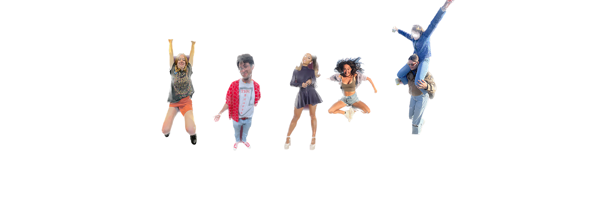
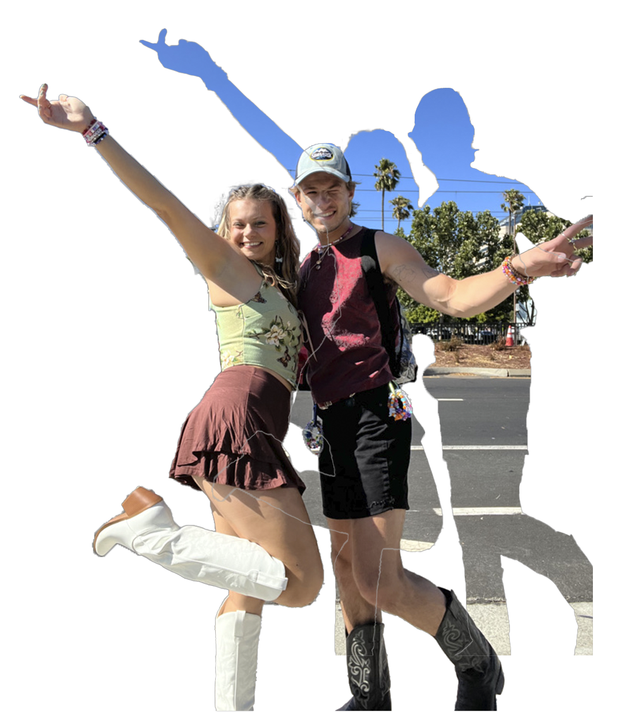

Projettes
Click me I bounce




Audio Chops
Click to listen:
florian spins.mp3 ft mac miller
idk indie ska ?
pop grande
Miss Grande goes low octave
Ariana Grande transition to Sofi Tukker circa 2021 maybe
bouncy Ariana vocals
Mine - Kelly Clarkson x Nasty - Ariana Grande
Contact Me
About Me
I love languages and just realized coding is one too. I’m diving into frontend development.